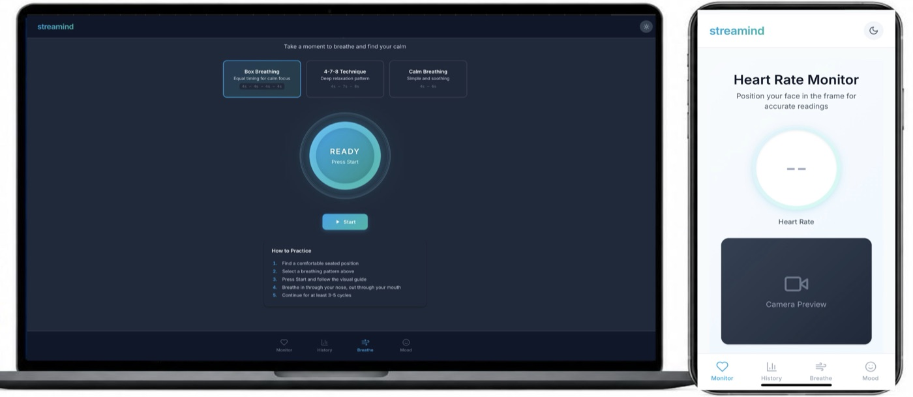

CTRL Robotics
A clearer hospital robot map: location, battery, route history, and X-to-Y navigation.
Open case study
Hi,
I’m
Vincy Huang.
Hi, I’m
I study data science and cognitive science at UC Berkeley. I’m interested in how people use AI and technology, and I use research and data to figure out what’s worth building.
I turn messy workflows into tools people can operate.
A clearer hospital robot map: location, battery, route history, and X-to-Y navigation.
Open case studyFeatured
Experience
Your Product, Research, or Data lens brings the most relevant chapter forward.
UC Berkeley Center for Teaching & Learning
Professors need evidence—not hype—to decide when AI supports learning. Course teams also need to understand motivation, format and schedule preferences, retention, and dropout.
My role: Combine focus groups, surveys, quantitative analysis, and qualitative coding to create findings educators can act on.

Project books
Click a cover to open it, then turn the pages.
Facial video to pulse signal
Read full case study ↗
Camera-based biofeedback for remote therapist and patient sessions, moved from laptop toward iOS.
About
I’m studying data science and cognitive science at UC Berkeley, a mix that lets me look at both the numbers and the people behind them. I’m especially interested in health technology and AI tools, and I want to build products grounded in evidence, human behavior, and careful evaluation.
Studying: Data science and cognitive science, UC Berkeley
Curious about: How people use AI and technology
Outside of work: I lead recruitment and operations for Computational Biology Club’s 90+ members, and I enjoy tennis and painting.
Established in 1934, TLA is a multi-year scholarship recognizing visionary, innovative, and community-minded Berkeley leaders. CAA describes it as the largest non-academic scholarship on campus; across CAA’s broader Alumni Scholars Program, about 17% of applicants are typically selected.
Explore the official award ↗